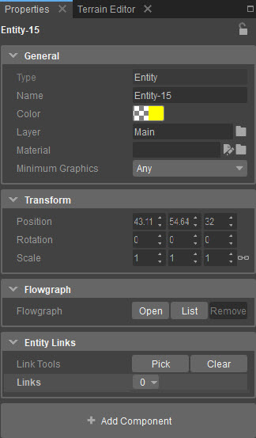

Обзор
Панель «Свойства компонентов объекта» позволяет вносить общие изменения в объект. Панель впервые отображается (в правой панели главного окна), когда в сцену/уровень добавляется самый первый компонент или пустой объект. На панели «Свойства» также имеется кнопка «+ Добавить компоненты». Дополнительные сведения см. в документации «Компоненты сущности — панель компонентов».

| Настройка | Описание |
|---|---|
| Тип | Тип по умолчанию (объект) — не настраивается пользователем. |
| Имя | Имя объекта — настраивается пользователем. |
| Цвет | Цвет сущности. |
| Слой | Указывает, на каком уровне уровня в данный момент находится этот объект. |
| Материал | Указывает или переопределяет текущий материал объекта. |
| Минимальная графика | Определяет минимальные настройки графики, при которых будет отображаться объект. Например, значение «Высокий» означает, что объект будет отображаться только для пользователей, использующих высокие настройки графики. |
| Настройка | Описание |
|---|---|
| Позиция | Определяет положение объекта в мире. |
| Вращение | Определяет вращение объекта в мире. |
| Масштаб | Определяет масштаб объекта. |
| Настройка | Описание |
|---|---|
| Flowgraph | Позволяет связать объект с Flowgraph. |
| Настройка | Описание |
|---|---|
| Инструменты для создания ссылок | Позволяет связывать несколько объектов вместе. |
| Ссылки | Показывает существующие связи с объектами. |